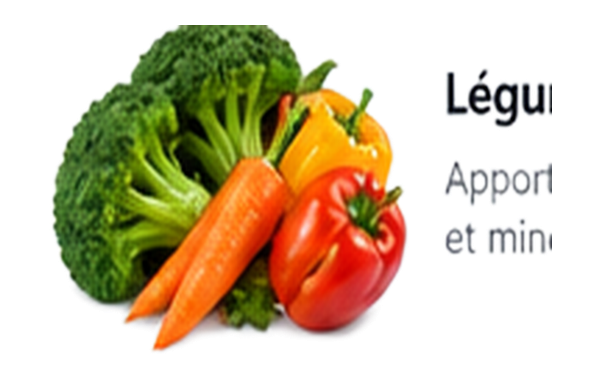
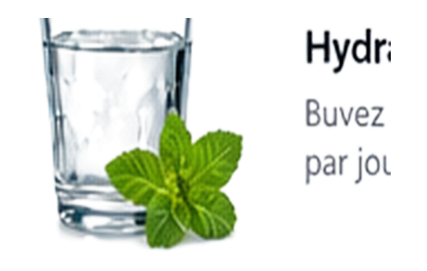

🌿
Mes Menus12 semaines • 84 jours
♥
Lundi
Semaine 1
🌙 Dîner
📝 Mon journal du jour
📱 Envoyer par WhatsApp
← Glissez pour changer de menu →
📆 Vue de la semaine
Semaine 1
🍳 Vue Cuisine
Lundi
🛒 Liste de courses
Semaine 1
Quantités calculées pour 2 personne(s) — modifiable dans Réglages.
🥦 Anti-gaspillage
Indiquez ce qu'il reste au frigo (un ingrédient par ligne), l'application repère les prochains jours qui l'utilisent déjà — et propose d'avancer ce jour-là à aujourd'hui.
❤️ Mes favoris
Vos repas préférés, mémorisés sur cet appareil
📅 Suivi du programme
Définissez le Jour 1. Les dates, jours écoulés et semaines passées sont calculés automatiquement.
⚖️ Historique des résultats
🔥 Constance & observance
🏁 Bilan & cycle suivant
Le bilan apparaîtra ici à la fin du programme.
Le cycle suivant pioche dans le programme initial et dans une banque de nouvelles variantes qui respectent vos contraintes (jamais de féculent au dîner, féculents complets à midi).⚙️ Réglages
🍽️ Portions
Utilisé pour les quantités des recettes et de la liste de courses.
🌓 Affichage
Pratique sur une tablette laissée en cuisine, pour éviter la mise en veille pendant la préparation.
Taille du texte
🔒 Code d'accès au mode « Mon programme »
Facultatif. Si vous partagez l'appli, ce code sera demandé pour repasser du mode Consultation à Mon programme.
🔔 Rappels
Le rappel s'affiche uniquement lorsque l'application est ouverte dans le navigateur (aucune garantie de notification en arrière-plan, notamment sur iPhone).💾 Sauvegarde
Vos données (suivi, favoris, journal) restent uniquement sur cet appareil. Exportez-les avant un changement de téléphone.
💡 Mes conseils

Variez les légumes
Alternez gombo, aubergine, chou, concombre, tomate, courgette, haricots verts et feuilles vertes.

Hydratez-vous
1 à 1,5 L d'eau par jour. Pas de sodas ni de jus de fruits.
🍽️ Déjeuner
Légumes d'abord, protéines maigres ensuite, puis la portion de féculents prévue.
🌙 Dîner
Privilégiez légumes et protéines maigres, sans féculent.
🔥 Cuisson
Privilégiez grill, four, vapeur, papillote ou wok léger.